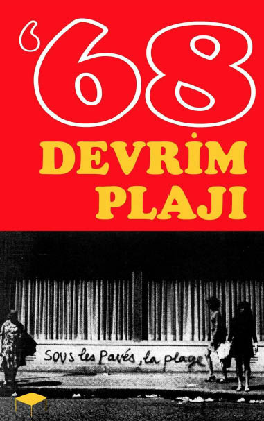
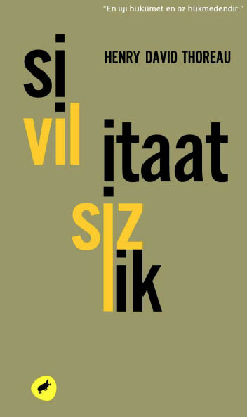
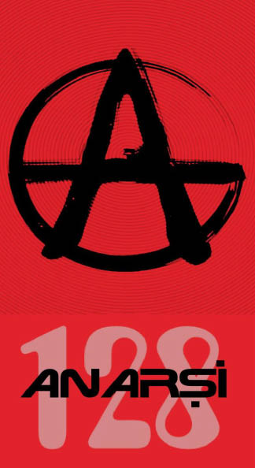

Demokrasi Miti
TAGE LINDBOM
I
Kim hükmedecek, Tanrı mı yoksa insan mı? Bu soru, ölümlü dünyada her şeyi, özellikle ve en belirgin olarak da sosyal düzenlemelerimizi belirleyen insan varlığının büyük anayasal sorusudur. Bu soruda ibreyi insanın lehine çevirmek için imanlı dönemler, imansızlık dönemlerine çevrilir. Peygamberlere itaat, harmoni ve uyumun hâkim olduğu devirler, bir şekilde itaatsizliğe, isyana ve inkara doğru yol aldırılır. Bu büyük kırılmalar esnasında zaman aşımı tanımayan ezeli soru ise şudur: Biz insanların bu dünyadaki sürekli huzurda bulunuşu, semavi ve ilahi buyrukların vekili olduğumuza denk midir yoksa değil midir? Veyahut biz insanlar kendimizi daha üst bir egemenlikten özgürleşmeye çabalamak zorunda mıyız, değil miyiz?
Bu çatışma, Kutsal Kitap’ta yer alan Düşüş bölümünde şimdiye kadar insanlara anımsatılmış bir çatışmadır. Bu bölümde bahsi geçen Yılan’ın ilk İnsan›a verdiği sözün iki ayaklı bir içeriği vardır. İyi ve kötünün bilgi ağacının meyvelerini yemekle ve bu şekilde ilahi buyruğu çiğnemiş olmakla İnsan, kendini semaya bağımlılıktan özgürleştirecek ve aynı zamanda iyiyi ve kötüyü bilen “tanrılara benzeme” vaadini gerçeğe dönüştürmüş olacaktı. Düşüş’ün, semaya bağımlı olan arızi tabiatımızdan kaçınılmaz bir şekilde serbestleşmek ve sadece Kutsal’a ait olan bir bilgiyi kazanmak suretiyle “eşit” olmak şeklindeki bu ikili içeriğiyle ancak insan Sitesi’nin dış hatlarını algılayabiliriz. İki köklü ideolojik “arketipler” olan özgürlük ve eşitlik, şimdilerde çözümlenmekte ve geniş çerçevede düşünülmektedir.
Bu iki ideolojik ilk örnek, akılcılık ve duyumsalcılığın iki kabiliyeti gibi sekülarizasyon diye adlandırdığımız bir süreç içerisindeki temel öğelerdir. Bu süreç ki, kutup yıldızı gibi yersel, yatay ve tek boyutludur. Sonuç olarak bu ilk örnekler, hiyerarşik olanla göğe ilişkin olanı inkâr etme eğilimini uzlaştırırlar. Sekülarizasyon ayrıca bu eğilimi, insan iktidarının pekişmesini amaçlayan ilerlemeci dünyevi fetihlere indirger. Bu yüzden bu iki ilk örneğe, yani özgürlük ve eşitliğe üçüncü bir öğe eklemek durumunda kalınmıştır: dünyevi iktidar.
Yahudi-Hıristiyan medeniyetinde sekülarizasyon sürecini göksel ile yersel arasında, maneviyat ile duyumsal düzen arasında, idrak ile muhakeme arasında yapıla gelen sürekli bir diyalog olarak görmek mümkündür. İnsan Sitesi’nin kaydettiği bilimsel ve teknolojik ilerleme ve başarılarını arkasına alarak Tanrı Sitesi’ne meydan okuması ve onu koyması her zaman olasıdır.
Modern Batı tarihinde sekülarizasyon, ilk adımını Orta Çağ’da Aristocu mantığın ve doğal felsefenin Batı dünya görüşüne zorla sokulmasıyla atmıştır. Bu yönde atılan önemli bir adım da on üçüncü yüzyıl da İngiliz Fransisken keşiş Roger Bacon›ın, matematiğin insan düşünüşünün dünyaya ait olan objektif hakikati kurabilmesinde temel bir metot olabileceğini iddia ederek matematiği öne çıkarmasıdır. Tıpkı Prometheus’un tanrılardan ateş çalması ve böylece onları gök ile yer arasına eşitlik getirmekle korkutması gibi, matematikle de ilahi hakikate denk bir bilginin kazanılmasının mümkün olabileceği öngörülerek insanların zihinleri iğfal edilmiştir.
Biz insanlar dünyayı duyumsal ve zihinsel yeteneklerimizle tecrübe ederiz. Duyumsal kaba bilgiden türettiğimiz kavramlarımızın bize gerçek bilgiyi sağladığına inanırız. Ockham buna paralel olarak şöyle demiştir: “Tanrı’nın kendisini dünyada sunmamasından dolayı biz O’nun gerçek bilgisine sahip olamayız. Biz sadece inanma durumundayız bilme durumunda değil.”
Bu açıklama, Ortaçağ düşüncesinde köklü bir ayaklanmayı, sahih bir devrimi temsil eder. Öte yandan bu açıklama Martin Luther’in sola fide’si yani sadece inanç şeklinde anlamak zorunda olduğumuz düşüncesinin tam karşısında yer alır. Luther’in bahsettiği yalnızca ateşli bir inanç,” Ockham’ın yer ile gök arasına, Yaratıcı ile yaratılmışlar arasına kurmaya çalıştığı denge köprüsünün çürüklüğünü ortaya çıkarabilir. Ockham için gerçek, duyularımızın algıladıklarından başkası değildir.
Önce Rönesans, sonra hümanizm, sonra da barok dönem: bu üçünün kendilerinden öncesine göre önümüze koyduğu fotoğraf varlığın sekülerleşmiş bir dünyanın giderek daha da profanlaşan bir kavrayışına dönüştüğünü kanıtlar. Bilim, teknoloji, estetik, sosyal ve politik güç vs. bunların hepsi Batılı insanın bilincinde giderek daha fazla baskın hale geldiler. Kesinleştirmek için söylemek gerekirse, ilerleme olarak görülebileceklerin çoğuna ilişkin tüm değişiklikler, bazı açılardan… Tanrı’yı onurlandırıcı şeyler olarak düşünülebilir. Ama barok devlet, kendisiyle birlikte bu değişikliklere tamamen dünyevi bir egemenlik nosyonu kazandırmış ve böylece barok devlet, Ortaçağ birliği ve bu birliğin din-merkezli güç anlayışını bozmuştur. Rasyonel düşünme, dünyayı faaliyet bakımından daha fazla yön gösterici olmuş ve bu eğilim felsefi mükemmelliğini, ünlü Discours de la Methode’unu 1637’de yayınlayan Fransız düşünür ve matematikçi Rene Descartes’da bulmuştur.
Pragmatik ve ampirik olarak biz hayattaki yolumuzu sürekli deneme ve yanılmayla bulmaya çalışmak durumundayız. İnsan plan yapmayı ve bir çıkar yol bulmayı öğrenmek zorundadır; işte tam da bu yüzden duyumsalcılık, sosyal bir amaç kazanır: korku ve acı çekme, sadece bireysel yaşamda değil toplumsal yaşamda da yok edilmelidir. Bu amacın tümünde rahatlıkla görülebilecek olan, kabataslaklandırılmış modern refah devletinin çizgileridir.
Rasyonalizm ve duyumsalcılık, kendilerini, sayelerinde sekülarizisyonun Batı dünyasına aktığı zihni akımlar ve bilincin iki biçimi olarak kanıtlayacaktır. Yedi ölümcül günahtan birincisi ve en büyüğü olan insan kibri, superbia durmaksızın büyümektedir. İnsanın kendini yersel iktidarın vekili olarak keşfedip bunu gerçeklemeye başlaması 18. yüzyıla tekabül eder. Kendisini yükseltme motivasyonuyla insan, binlerce yıldır zıtlık ve eksikliklerin tanımladığı biçimsel düzen içinde mahpus, yaratılıştan şüphe etmeye ve onu inkar etmeye başlar. Buna rağmen insan, sınırları olmayan ve insan gücüne had koymayan bir dünyada yaşadığına inanmayı da ihmal etmez. Bu giderek büyüyen narsisizm içinde büyük harfle İnsan ve İnsan türü, soyut bir ikiz takımı olarak tezahür eder.
II
1789 Fransız Devriminin seçkin bir içeriği vardır: Fransız Devrimi, eski geleneksel düzeni lanetleyerek insan hayatına ilişkin tamamen yeni bir yapı beyan eder. Bu arada ben gelenekselcilik ve modernizm terimlerini kullandığım zaman sakın bu terimleri gelişigüzel kullandığım sanılmasın. Bu terimlerin her ikisinin de birbirlerine göre birtakım nüansları var. Bu bakımdan her ikisi de çok değişik şekillerde yorumlanabilir, ama unutmamak gerekir ki bu terimler hiçbir zaman hayatın ve bilincin iki farklı kavrayışlarını ifade etmez. Bir kere gelenekselcilik, yersel ve duyumsal aktüaliteyi belirlediğine inanılan bölünemez bir güç üzerinde, yüksek ilahi Gerçek üzerinde temellenir. … Özetle söylemek gerekirse geleneksel insanın objektif bir Varlığı kavrayış kapasitesi vardır, çünkü geleneksel insanı geleneksel yapan özellik, onun kendi kalbine konmuş olan ölümsüzlük ve objektif gerçeklik bilincine sahip olmasıdır.
Modernizm geleneksel olanı reddeder. Bunun en birinci nedeni, onun, genellikle sonu gelmez ilerleme ifadesiyle anlatılmak istenen sürekli değişim ile vasıflanmak için bir “Özgür el”e arzu duymasıdır. Hiyerarşi, otorite, zaman içinde şişen gelenek ve toplumun büyüttüğü normlar -bunların hepsi modernistler tarafından tarihsel dinamizme ve göreceliliğe set olsun diye geliştirilmiş yığınlar olarak görülür. Modernist için tarih, tüm şeylerin görece olduğu hızlı değişimin öyküsüdür. Modernistin böyle bir tanımlama yapmaktaki amacı, insan faaliyetine yeni ve genişletilmiş alanlar açmaktır.
Büyüyen sekülarizasyon, bir yandan da kendi karşıtı olan sürekli güçsüzleşen geleneksel değerler anlamına gelmektedir. İnsanın içindeki Tanrı’nın sureti, dur durak vermeden inceltilmektedir. Dünyevi olaylar da ve işlerde Kutsal’ın rolü en azından insanın bilincinde gittikçe azalmaktadır. Böylece modern insan yeryüzü üstünde kendisinin, yalnız kendisinin egemen olduğunu daha çok düşünmeye başlar. Son olarak da dünyaya hükmeden güç el değiştirir; sema ve yer şimdi birbirinden ayrılmış kıtalara benzer. Devamlı bir surette nabız gibi atan hayat, sabit değişim ve kesintisiz ilerleme... Bunlar bizim modernizm olarak adlandırdığımız idealler ve değerler arasında en önemli öğelerdir artık. Tarihsel gerçeklere uygun olarak 18. yüzyılın son on yıllarında bize temel bir değişim eşiğinin atlatıldığını söyleyebiliriz. Sekülarizasyon, Batılı insanın bilincinde bu devirden sonra artık buluğa ermiştir. Tanrı Sitesi suretinin rengi yeterince soldurulduğuna göre şimdi İnsan Sitesi’nin temelleri yerleştirilmeye başlanabilir.
Modern dünyada hayat, her zaman yeni görünümler sağlayan ve her zaman yeni maceraların beklenildiği bir nehir üzerindeki gezintiye benzer. Bu yeni bilinç halinde not edilmesi gereken önemli bir psikolojik faktör vardır. Bu da bizim biyolojik ve zihni yaşamımızda kendini hastalık kalıntısı gibi sürekli tehdit ederek belli eden şeydir: hüzün tehlikesi. Bununla yüz yüze gelen modernizm, bize bu tehdidin çözümünde kullanılacak bir hediye sunar. Buna göre bu depresyon ve melankoli tehdidinin ilacı faaliyet, değişim ve değişimden zevk almaktır. Bu şekilde modern insan bize yeni bir kavram, yeni bir terim verir: “radikal”, çünkü onun çabalamalarının tümü, sola yöneltilmiştir. Tıpkı Fransız Devrimi›nin maksimi gibi: “solda hiçbir düşman yok”.
Geleneğin kendilerini biçimlendirdiği insanlar, son dönemlerde ciddi bir problemle yüzyüzedirler. Eğer babalarının inancına sımsıkı sarılırlarsa toplumdan tecrit edileceklerdir. Bazıları ifade etmişse de bu durumu hiç kimse De Tocqueville’den daha güzel söylememiştir. O der ki: “Geleneğin insanları kendi kadim inançları nedeniyle terk edilmekten ve yalnız bırakılmaktan korkarlar; ve yanlıştan çok tecritten korktukları bu ikilem içinde kalabalığa karışırlar.”
İnsan, gün ortasında rüya gören bir varlıktır. Bu aslında bir ihtiyaçtan doğmuştur, yeryüzü hayatının katılığından kaçma gibi bir ihtiyaçtan. Bu nedenledir ki, çeşit çeşit peri masalları ve rüyaların oluşturduğu sanal dünya, insanın yeryüzü hayatında adeta bir sığınma yeridir. Dolayısıyla insan bu sıradan çatışma ve mücadele dünyasından, içinde başı boş dolaştığımız bu yavuz labirentten yüzünü çevirir; ve huzur dolu ve cennetimsi varlığın özlemini çektiği rüyalara dalar. Peri masalları ve rüyaları, yıpratıcı profan gerçeklerin veremediklerini verebilecek güce sahiptir çünkü. Böylece özdeksel olmayan umutlar ve peri masalları yüksek tutulmuş rüyaları gerçekleştirmek için bir araca dönüşür.
Yine bilir ki, bir rüya sadece bir rüyadır, masallar da masaldır. Geleneksel insan için ise dünya ne ise odur, tıpkı insanın ne ise o olması gibi: potansiyel olarak bir aziz ya da kötü ruhlu biri. Özetle geleneksel insan, yersel varlığının uzağında rüya göremeyeceğinin farkındadır.
Buna karşılık, dünyevileşmiş insan başlangıçtaki hikmeti kaybetmiştir. Masallar ve yap-inan dünyasına gireli beri, gün ortasında gördüğü rüyalar farklı bir muhteva kazanmıştır: İnsan Sitesi’nin imzası altında herşeye gücü yeten insan iktidarı, yeryüzünde mükemmelliği gerçekleştirecektir. Çünkü dünyevileşmiş insan, sadece gerçekte nasılsa o şekilde olan objektif dünya bilincinden ve tüm sınırlılıklarıyla yaratılış bilincinden yoksunlaşmamış, ama daha da önemlisi dünyada ve insanların yaşamlarında ilahi hazır bulunuş (huzur) bilincinden de uzak kalmıştır. O bu yüzden bir boşluk ve bir anlamsızlık hissiyle doludur ve salt bu durum, onu kendisini sonsuz narsistik tasarılara ve spekülasyonlara bırakması için yeterlidir. Gün ortasında rüya görmekle gerçekliğin yerinin değiştirildiği yer, işte bu tasarlamalardır. Geleneksel insan yaratılmış dünyanın asla bir cennet olamayacağını bilir. Buna karşılık dünyevileşmiş insan, insan gücünün varoluşsal eksiklikleri kökünden kazıyacağı şeklindeki rüya ile büyülendiğinden cennet umudunu kaybetmeyerek cennetin izini sürmeye devam eder.
Özsel olarak konuya eğildiğimizde bu yeni anayasal düzenin iki problemi çözmek zorunda olduğunu görürüz. Bunlardan birisi, kutsal huzurun unutulduğu, inkâr edildiği ya da onunla yarışa girişildiği profan varoluşta karşılaştığımız boşlukla ilgilidir. Ve bu boşluk, bu dikey bağlantı yokluğu, yatay düzlemde tek boyutlu çizgide doldurulmak suretiyle yok edilmek zorundadır. İkinci problem ise insanın incinmiş kimliğidir; kompleks gerçekliği içinde insan, devamlı surette hem kendi başına hem de aşkındır. (Bu gerçek aynı zamanda insanın eş zamanlı olarak nasıl hem bireysel hem de evrensel olabildiğini de açıklayıcı mahiyettedir).
III
Rousseau Düşüş’ü sadece bir yeryüzü dramı, seküler bir trajedi olarak yorumlamıştır. Kendisi de bunu doğrular: “İnsan Özgür doğar, ama sonra zincirlerin koynundadır.”
Gerçekte Rousseau’nun masum Tabiat Cenneti’nden anladığı, Yahudi-Hıristiyan Düşüş’üyle ilgiliydi, çünkü ilk insanların iyi ve kötünün bilgi ağacından yenmemesine dair buyruğa itaat etmemekle kesinlikle kazanacaklarına inandıkları “özgürlük,” Rousseau’nun “cennetinde” insan varlığının birinci temelidir. İnsanın sema düzenine başkaldırışı, “tanrılara benzeme” ve Tanrı’ya eşit olma teşebbüsü, Rousseau’nun “cennetinde” ikinci temel taştır. Görülüyor ki, kendi” kutsal” Tabiat düzeninde Rousseau, rüya şatosunu iki sahte arketip üzerinde dikmişti: özgürlük ve eşitlik.
Bu iki arketip sayesinde insan ulaşılması gereken bir hedefe sahip olmuştu: vahşiliğin ve baskının hakim olduğu nesne dünyasında “suni” ve “haksız” düzenlemeleri bertaraf etmek. Böylece yaratılmışları “cennetsel” köklerine, bir başka deyişle Tabiat’ı kendi orijinal düzenine geri döndürmek. Adaletsizliğin bertaraf edilmesi ise sonuçta bir anayasa inşa etmeyle mümkündü. Sadece özgürlük ve eşitlik temeli üzerinde yükselen bu anayasa, Tabiat’ın dünyevi meşruiyetinin “kutsal” düzenini sağlayabilirdi.
Ancak bu amaç, sonuçta herkesçe görünmesi ve onaylanması gereken bir doğruluk, doğal hak ve adalet yapısı talep ediyordu. Bu noktanın keşfedilmesiyle biz yeni bir kavramla, Sosyal Kontrat (Contrat Social) ile tanıştık. Rousseau, yaratılışta içkin bir adalet düzeni, doğal bir fazilet ve iyilik olduğuna ilişkin antik düşünceye muhabbetle kucak açmıştı.
İngiliz sosyal felsefecisi Thomas Hobbes da, egemenlik üzerine yazdığı külliyatında bunun yolunu göstermiştir, vatandaşı John Locke ise çifte kontrat sunarak meseleyi daha da ilerletmiştir: birincisi, müşterek bir kontrat ve ikincisi ise, birinci sözleşmenin temelinde düzenlenmiş olan bir hâkimiyet kontratıdır.
Bu ütopik düşünceler ve yapılana meczolmuş teorik kontratlar, insanın üstün gelmesi ve kanunsuzluğu ve geçici sıkıntıyı yok etmesi öngörüleniyle sıradan yaşama, pratik dünyaya ve kurumlara sunulan çabalardır. Rousseau ilk olarak, kontratı yersel, kurumsal ve politik vasfından özgürleştirmiş ve onu profan şartlarından soyutlama niyetiyle mitsel bir rütbeye yükseltmiştir. Rousseau için Tabiat, psiko-fiziksel olgulardan daha fazla bir şeydir; yani kutsaldır. Özgürlük ve eşitlik de benzer şekilde kutsal ve devredilemezdir.
Rousseau’ya göre insanoğlunun tümü eşit doğar. İşte bu sebepten dolayı, egemenliği içeren sosyal bir sözleşme üzerinden hükmetmek gerekir. Bunun mantıksal sonucu, herkesin herkesle bir sözleşme yapmasıdır. Bu sözleşme yoluyla herkes, herkesle bağlanır, herkes kendisinden diğeri adına feragat eder, ama sonuçta hiç kimse kendisini her hangi bir şeye ya da herhangi birisine tutsak etmez. Böylece iktidar, baskı ve kölelik dışlanmış oluyordu. Bunun sonucunda eğer bir kimse bir başkasına verilmemiş olan bir hakka sahip olursa, bunun anlamı eski dönemlerdeki tiranların yeniden hortlaması olacaktı. Ve böyle bir hortlama sosyal kontratın boydan boya delinmesi demekti.
Bu ortaklık, bir özgürlük ve eşitlik ortamına neden olur. İnsan, kendi kendisini yönetmesi, yani kendi kanunlarını yapması anlamında özgürdür ve aynı zamanda eşitlik (hükme uzanma bağlamında eşitlik, yani vatandaşlık) içinde yaşadığı “ortaklığında” özgürdür. Biz güç ve zekâ bakımından farklılıkları red edemeyiz. Ancak bu Rousseau’nun beyan ettiği gibi, Tabiat’ın kendisinde karşılığını bulan “adaletsizliktir.” Bu gerçekler ışığında herkes, sözleşme ve vatandaşlık kurumu altında kendisini eşit hisseder.
Bu sosyal kontratın gelişimi, Rousseau’nun sahte-mit yolunu daha da ilerletmesini gerektirir. Herkes şimdi basit bir çokluk içinde değil, ahlaki kurum içinde ortak statülere sahip olacaktır. Bireyin özgürlüğü değişmez, ama sözleşme bağlamındaki hareket, sosyal atomizmin ve kaosun her türlüsünü dışlar. Çünkü ahlaki bir kurum olarak sosyal kontrat, bir birliktir. Dolayısıyla sözleşme yapan kalabalık içinde bulunan bireylerin üzerinde daha yüksek bir “ben”e yükseltilir. Bu “yükseliş” sayesinde Rousseau, mitsel yapısının diğer önemli bir öğesini ekler. Buna göre İnsan’ın bu dünya üzerindeki yeni gücü, kendi bireyselliğinin ve “benliğinin” sınırsız yeryüzü iktidarını meşrulaştıran çokluk içinde eritilmesini talep eder. Birey ve grup, ortak bir kimlik oluşturmak zorundadır artık. İnsan ve İnsan türü tek olacaktır.
Kontrat, insana -ve dolayısıyla insan türüne- sosyal kölelik getirir. İnsan bütün normların üzerine, zaman ve mekanın üzerine, tüm tarihsel değişim ve süreçlerin üzerine yükseltilir. Böylece sosyal kontrat, mitin temelli mührüne sahip olur, çünkü başlangıç kökü itibariyle mutlaktır. İnsan bu kontratla birlikte “kutsallaştırılmıştır” ve bu “kutsallaştırılan” insanın yaptığı şey ise, aslına bakılırsa Tanrı’nın yerini gasp etmekten başka bir şey değildir.
Bu noktada karşılaşılan kurum, bu yüksek “benlik,” kendisini farklı kılıklara girerek toplumun ihtiyaçlarına karşılık gelen en çeşitlenmiş biçimlerde gösterir. Sözgelimi bu benliğin resmi bir kişi olması zorunlu olduğunda, buna Cumhuriyet ya da politik kurum adı verilir. Bu benliğin resmi kişiliğinin pasif boyutuna Devlet ya da Site; aktif ilişki boyutuna ise Hükümdar denir. Onun kolektif ve ortak biçimi Halk olarak adlandırılır; buna karşın bireysellik söz konusu olduğunda Vatandaşlık rengine bürünür. Ve kanun altında düşünüldüğündeyse kendisini Uyruk başlığı altında buluruz.
Rousseau tabiat kelimesini iki anlamda kullanır: birincisi Tabiat’ın orijinal adil düzeni; ikincisi hayatın mücadele, hırs, baskı ve kölelik içindeki durumu. Rousseau burada çok önemli bir ayırım yapmaktadır:
Özel yaşam yok edilmemek gerektir, gerçekten yok edilmemelidir. Çünkü özel yaşam, bireysel gösterimi içinde insan doğasına ilişkindir. Ancak sosyal kontrat ile üstesinden gelinmesi gereken özel menfaatlerin ve iktidar hırslarının baskın olduğu yer toplumdur, insan topluluğudur. Bu yüzden insan başlangıç saflığında ve masumiyetinde tekrar yapılanacaktır. Dolayısıyla Rousseau, sosyal kontratın kutsallığından bahseder. Ancak bunların hepsinin nasıl gerçekleştirileceği çok net değildir. Rousseau burada belirgin bir şekilde kendini gösteren temel bir problemle yüz yüze gelir: Egemenlik.
Rousseau’nun bize çizdiği eşya şemasında egemenlik ve baskı, ayrıştırılamaz iki şeydir. Egemenlik, her zaman hiyerarşi ve dikey ilişki anlamına gelir. Ve tam burada biz Rousseau’nun icat ettiği sahte-mitsel görünümün tutsaklarından birine götürülürüz. Egemenlik, Rousseau’nun düşüncesine göre kendi kendini yürürlükten kaldıracaktır. Sosyal kontrat’ın başardığı da zaten bu sihirli vuruştur. Kontrat doğası gereği eşitlikçidir ve bu zorunluluğun erdemi içinde hiç kimse bir başkasına baskı yapma hakkına sahip değildir.
Sosyal kontrat böylece kendi iradesine sahip olan yaşayan bir organizma olur. Bu irade Egemen Halk›ın gerçek niyetlerini ifade eden pek kutsal bir şeydir. Buna paralel olarak bu irade ayrıca müşterek iyiyi ifade eder. Halkın İradesi›nin İlahi İrade ile yeri değiştirilir. Egemen Halk, belirsiz politik bir heykel değildir. Yaşayan yüksek bir benliktir. Bu benliğin iradesi, ilksel olarak adil olan ve dolayısıyla tabiatın daha derin anlamını ifade eden Devlet sayesinde bencil baskı sisteminin yerini alarak yeryüzü düzenini gerçekleştirecektir.
Bu şaşılası mit inşasının bütününe göz atıldığında, özelden genele olan önemli başkalaşımı açıklamak zorunda kaldığı zaman Rousseau, görünüşe bakılırsa ferdin ve sosyal hayatın içerdiği tüm antinomileri kesin olarak yürürlükten kaldıran Halk İradesine düşman olanları sisteminde bir bakıma serbest bırakır. İşin doğasında bu vardır, çünkü giriştiği manipülasyonlarının tümünde Rousseau oy ile yüzleşmekten kaçamaz. İnsanlar oy kullanmak zorundadır. Ve tam da bu yüzden çoğunluklar ve azınlıklar ortaya çıkar. Burada, yani çoğunluk-azınlık ikiliğinin oyunda sahne almasıyla Rousseau’nun ayağı kayıyor gibi görünmektedir. En yüksek Adalet olarak adlandırılan Halk İradesi mefhumu, bir adalet öğesi iken, oy kullanmanın ifade ettiği niceliksel güçten dolayı zorunlu olarak çıplak Güç şeklinde kendisini gösterir. Ne gariptir ki, en başta Güç’ten kaçılırken, yine ona geri dönülmüştür. Ve yine ne garip bir cilvedir ki, Halk iradesi’nin asıl muhtevasını tam olarak anlamamış çoğunluktan birisi tarafından, bunun anlamının azınlıkta olan birisine anlatılabilme durumu vardır. Bu çarpık yapı içinde Stalinist politbüro, kendi varlığını daha şimdiden belli eder. Rousseau’nun tek boyutlu Halk Egemenliği dünyasında, sadece tek bir irade, tek bir hakikat, tek bir adalet vardır. Ve kendini ona teslim etmediğinde acı, seninle olacaktır.
Türkçesi: Ömer Baldık


